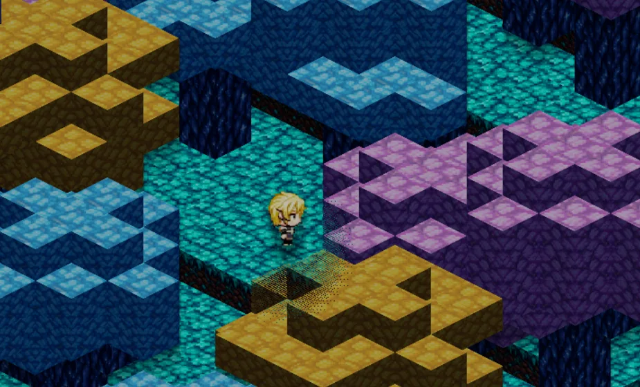
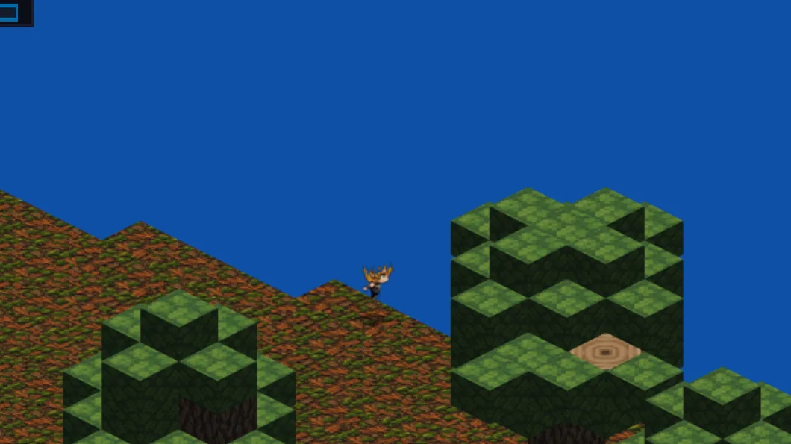
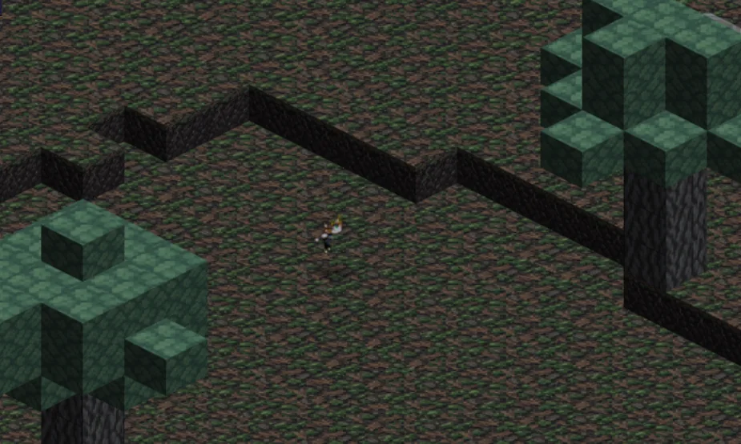
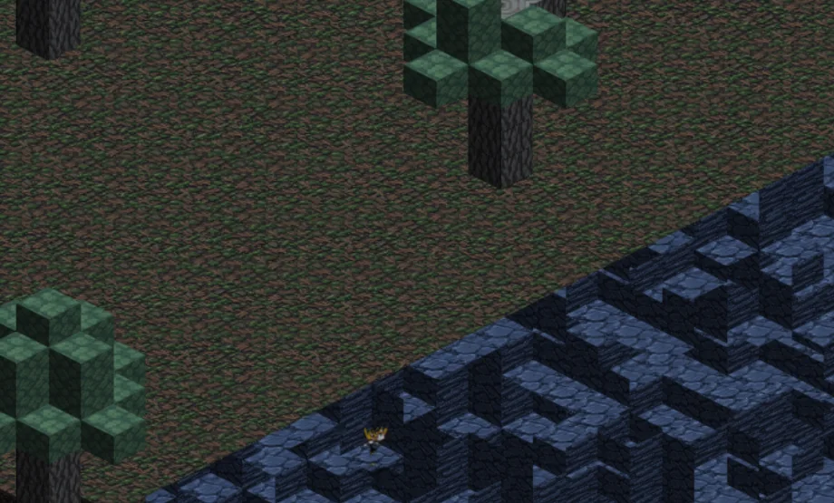
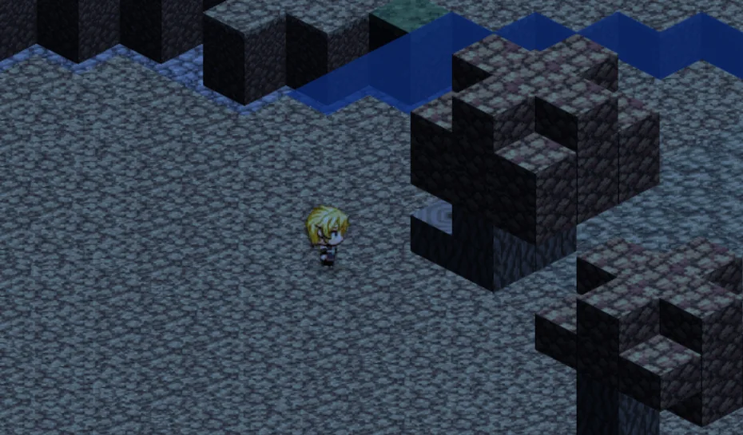

Independent games · Worlds in progress
Videojuegos independientes · Mundos en desarrollo
Worlds to
get lost in.
Mundos para
perderse en ellos.
We're building an original 2D pixel-art sandbox RPG shaped by procedural worlds, free exploration, and an obsession with the details that make a place feel alive.
Estamos creando un RPG sandbox original en pixel art 2D, con mundos procedurales, exploración libre y una obsesión por los detalles que hacen que un lugar cobre vida.

001 — The project001 — El proyecto
A world with a thousand paths.
Un mundo con mil caminos.
Our in-development title is an open-world 2D RPG sandbox. The creative goal is a coherent landscape where geography, biomes, caves, resources, and future gameplay systems influence the journey. The screenshots below come from real development builds, not concept renders.
Nuestro juego en desarrollo es un RPG sandbox 2D de mundo abierto. Buscamos un paisaje coherente donde geografía, biomas, cuevas, recursos y futuros sistemas de juego influyan en cada aventura. Las imágenes de abajo provienen de compilaciones reales, no de ilustraciones conceptuales.
002 — Inside the world
002 — Dentro del mundo
Places taking shape.
Lugares que toman forma.
A first look at actual environments from our working prototype. We frame the landscape, not the interface.
Un primer vistazo a escenarios auténticos de nuestro prototipo. Aquí el protagonista es el paisaje, no la interfaz.




All game imagery shown here is captured from development builds and cropped to focus on the environment. Visuals and features may change during production; no release date has been announced.
Todas las imágenes del juego son capturas de compilaciones en desarrollo, recortadas para destacar el entorno. Los gráficos y sistemas pueden cambiar; todavía no anunciamos una fecha de lanzamiento.
003 — The studio
003 — El estudio
Curiosity is our compass.
La curiosidad es nuestra brújula.
The Fiven Or Community is an independent game-development initiative. We prototype, test, revisit and refine—building toward a world that rewards discovery rather than following a fixed route.
The Fiven Or Community es una iniciativa independiente de desarrollo de videojuegos. Prototipamos, probamos y perfeccionamos para construir un mundo que recompense el descubrimiento sin imponer un único camino.
A living geography
Una geografía con sentido
Terrain, elevation, caves and biomes designed as pieces of a connected world—not isolated scenes.
Terreno, alturas, cuevas y biomas pensados como partes de un mundo conectado, no como escenarios aislados.
Freedom to explore
Libertad de explorar
Our long-term vision puts discovery, interaction and player choice at the heart of the experience.
Nuestra visión a largo plazo sitúa el descubrimiento, la interacción y las decisiones del jugador en el centro.
Built by iteration
Creado mediante iteraciones
Real builds, real tests, honest milestones. Features evolve through engineering and playtesting.
Compilaciones reales, pruebas reales y objetivos transparentes. Los sistemas evolucionan con ingeniería y pruebas de juego.
004 — Get in touch
004 — Contacto
Great worlds start with a conversation.
Los grandes mundos comienzan con una conversación.
Partnerships, studio inquiries or ideas about what we're building? We'd love to hear from you.
¿Colaboraciones, consultas profesionales o ideas sobre lo que estamos creando? Nos encantará escucharte.
contacto@thefivenorcommunity.tech ↗